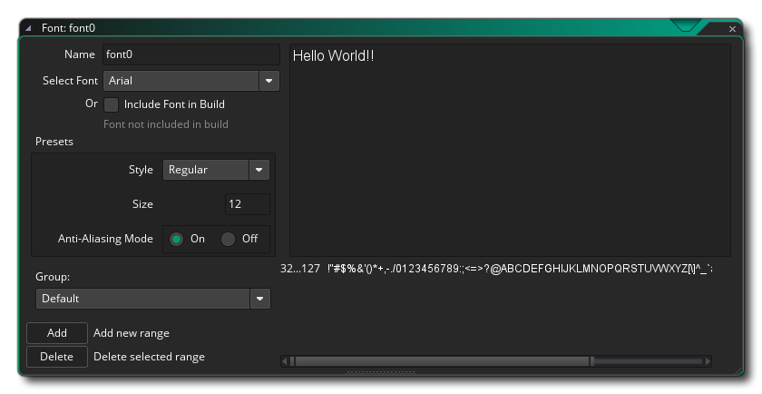
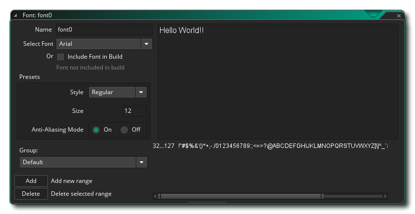
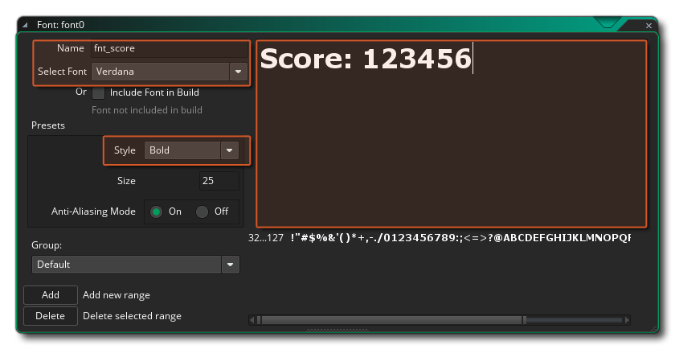
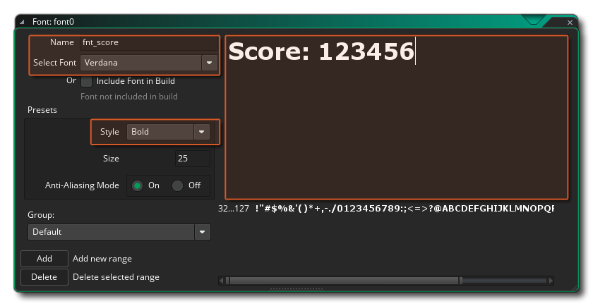
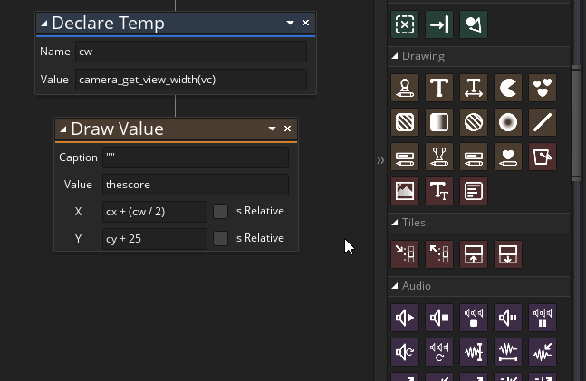
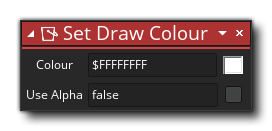
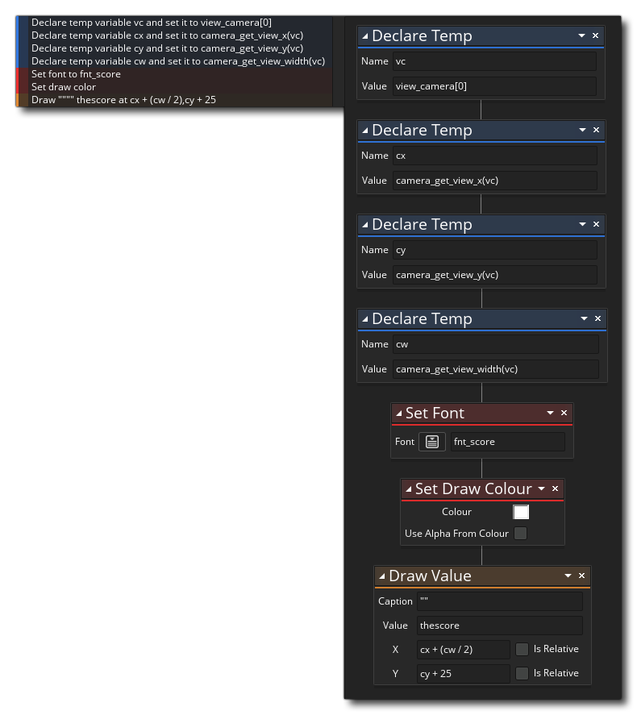
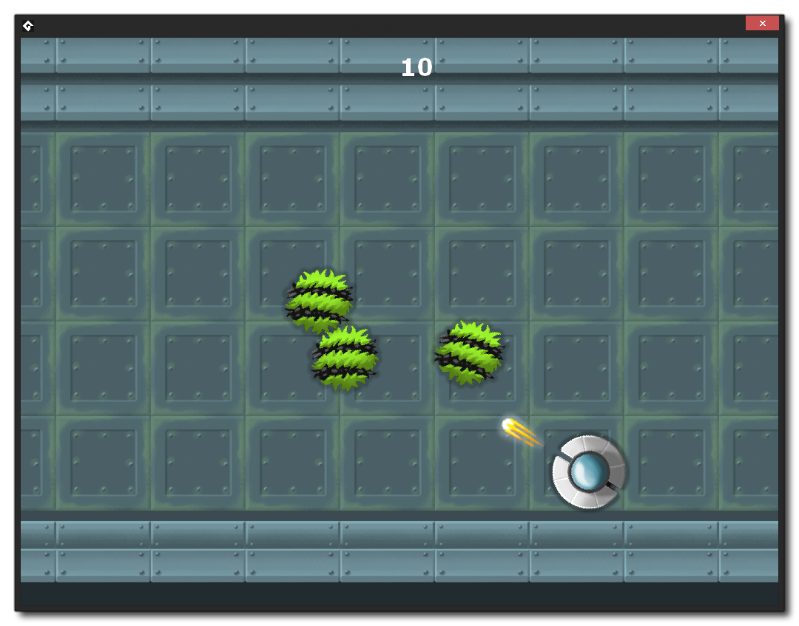

We need to style the text on the screen to make it more readable and nicer to look at and for that we'll start by adding a new Font Resource. If you right click  on the Font resource and select Create it will create a new font resource and open the Font Editor:

on the Font resource and select Create it will create a new font resource and open the Font Editor:

Following the naming convention <prefix>_name we'll call this new font fnt_score. You can then go ahead and select a font from your machine to use as the game font and then in the editor set the style to bold to make it stand out that much more (if the font you select permits it), and set the size to 24 to make it bigger. Note that in the Font Editor you have a preview window that by default shows "Hello World". You can actually delete this and type in any text to get a preview of how it will look in the game. The other options in the Font Editor are outside of the scope of this tutorial, but you can read up on them by pressing  to open the manual and going to the section on the Font Editor.

to open the manual and going to the section on the Font Editor.

You can close the font editor now, as the next bit of styling we need to do is done through code. By default GameMaker Studio 2 will use a draw colour of white for everything, but at various points in your game you may wish to change this, and it's good practice to explicitly set the draw colour before drawing anything, so that is what we are going to do now as well as draw the text itself. Go back to the controller object obj_score and make sure you have the general Draw Event open as we need to edit it.
The first thing to do is tell GameMaker Studio 2 that we want to draw with new font resource, so before the

As the action name implies, this will set the font for drawing any text. Note that this will set it for the whole game and all subsequent text will be drawn using this font even if you don't use this action anywhere else, so if you want to use various fonts in a game you must call this action before every item that needs drawing, but if your game only needs one font then you can call this action in a controller at the start of the game once only.
We want to set the colour that the font is drawn in too, so now add the action Set Draw Colour like this:

The default colour is white, so we don't need to change anything there (although you could set the colour to anything you want by clicking the colour swatch in the action which will open a colour picker for you or by giving a hexadecimal colour value), but we need to un-tick the "Use alpha from colour" option, as we want the text to be drawn solid white regardless. Again, like the Set Font action, this will set all further drawing to use the given colour (and not just for text either, this will affect shapes that are drawn and few other things), and so can be called once at game start if the colour isn't going to change, or once every time that you want to draw with another colour.
With that done, the full action list for the general Draw Event should now look like this:

You can now run the game again and you should see that the score is much more visible, maintains it's position and goes up when an enemy is destroyed:
